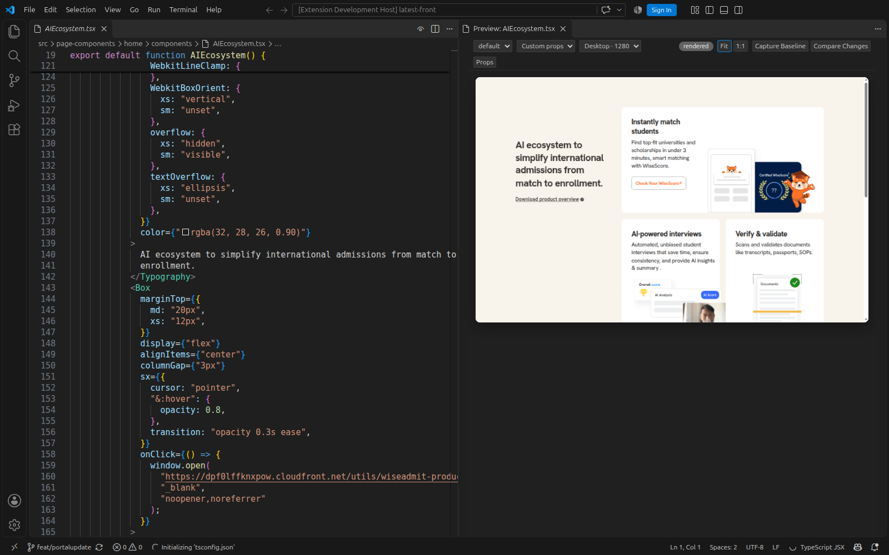
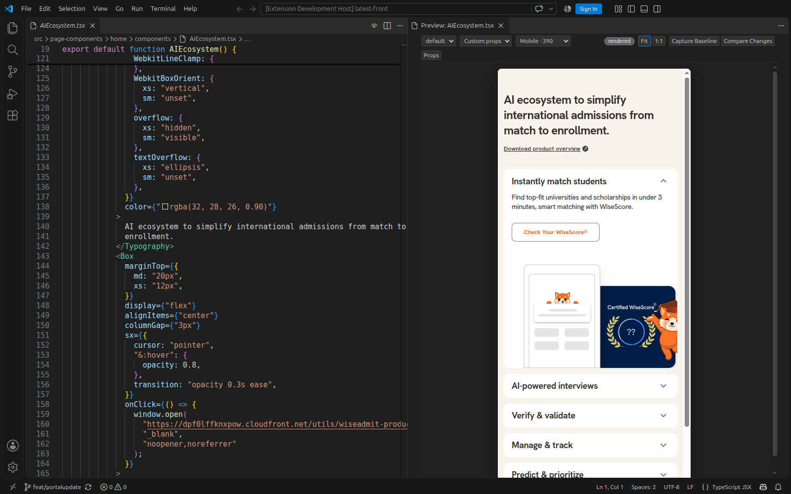
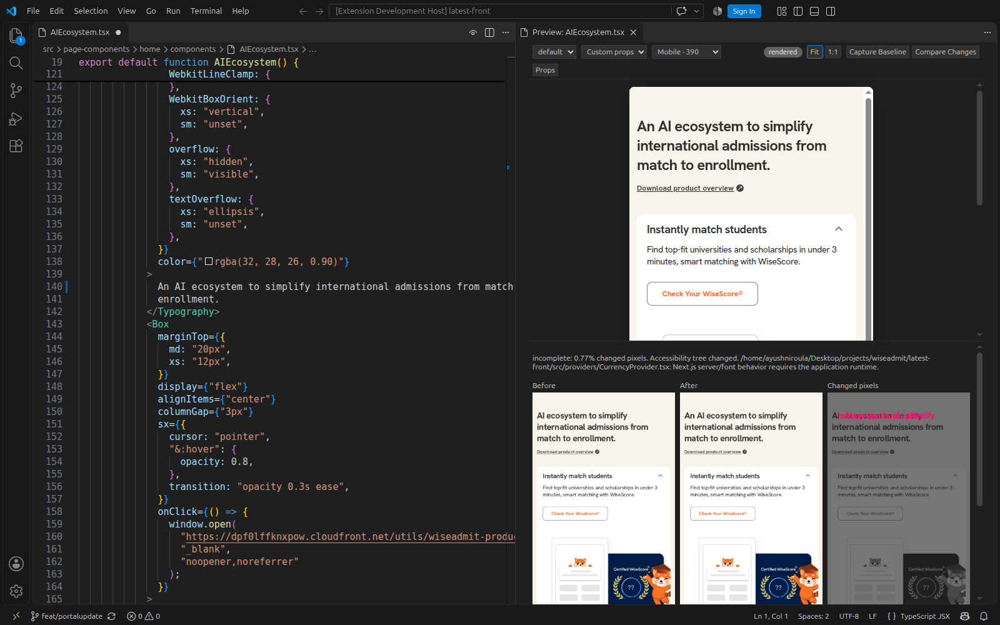
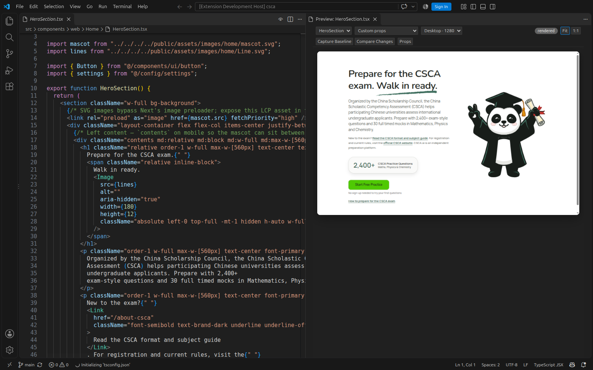
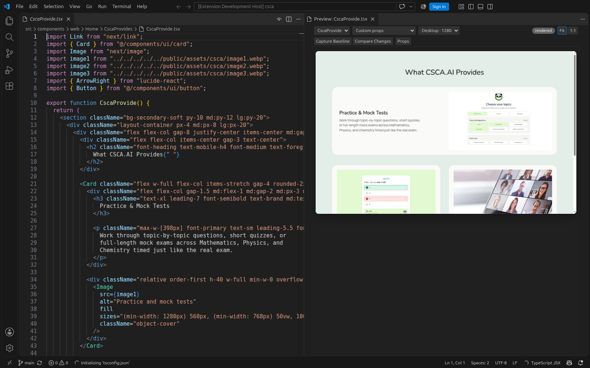
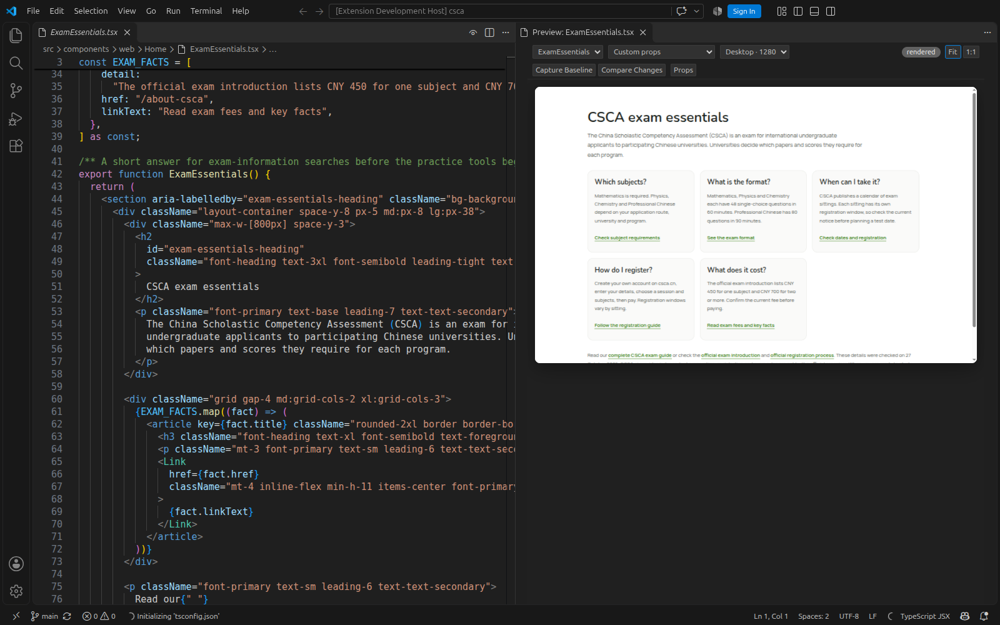

WiseAdmit: a real page section

The same source at mobile width

Compare an unsaved edit

CSCA.ai: the existing homepage hero

CSCA.ai: practice and learning feature cards

CSCA.ai: an exam-information card grid

Font and context fidelity
Arguseye reuses matching Next Google font faces from the project's existing .next/static assets. It does not download or compile fonts. Missing font assets and unsupported root expressions remain visible as incomplete context. The CSCA source files were not rewritten for these screenshots; demonstration edits stayed unsaved and were discarded.